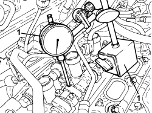
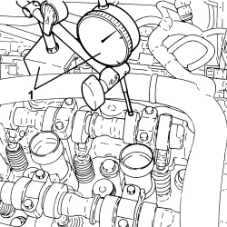

0510A30 CAM LIFT - CHECK WITH TAPPET COVER(S) REMOVED
- Path
- Procedures > 05 DIAGNOSTICS > 0510 VARIOUS CHECKS > 0510A CHECKS ON ENGINE > 0510A30 CAM LIFT - CHECK WITH TAPPET COVER(S) REMOVED
- Kind
- repair procedure (removal / refitting; the operation number is the code)
- Applies to
- engines: 3.2 JTS; all production periods
- Interactive page
- https://sloeber94.github.io/elrnDB-aBrrSpdr/en/#/946003988
Applies to: engines: 3.2 JTS; all production periods
- Remove the spark plugs, refering to
RIGHT HEAD CAMSHAFT CAM LIFT CHECK
1. Fit an appropriate steel mount and position the magnetic base fitted with dial gauge on it, as shown in the diagram.

Applies to: engines: 3.2 JTS; all production periods
Turn the crankshaft by means of the service pulley nut and check that the nominal lift of the right head camshaft cam is within required limits.
Measurement | Value | Validity |
|---|---|---|
Nominal camshaft cam lift (mm) | 11 | 3.2 JTS |
Applies to: engines: 3.2 JTS; all production periods
LEFT HEAD CAMSHAFT CAM LIFT CHECK
1. Fit an appropriate steel support and position the magnetic base fitted with dial gauge on it, as shown in the diagram.

Applies to: engines: 3.2 JTS; all production periods
- Turn the crankshaft by means of the service pulley nut and check that the nominal lift of the left head camshaft cam is within required limits.
Measurement | Value | Validity |
|---|---|---|
Nominal camshaft cam lift (mm) | 11 | 3.2 JTS |